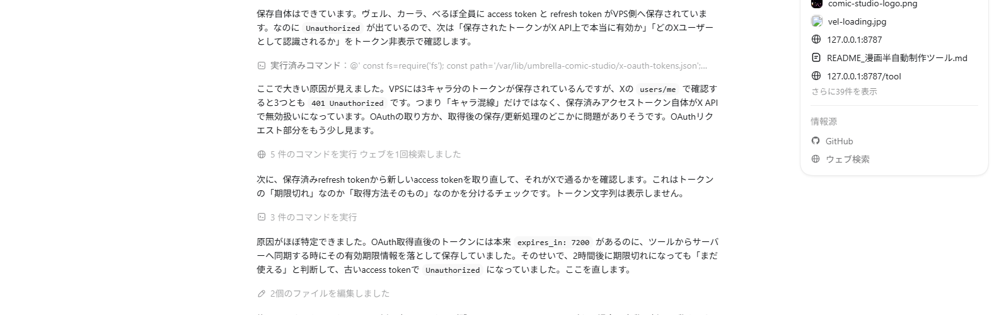
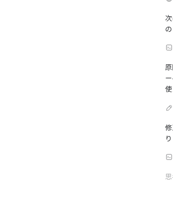
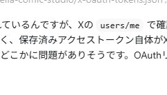
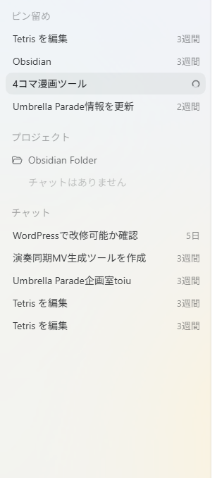
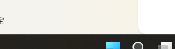
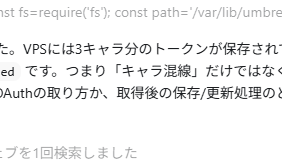

このアプリは、パソコン内の音声ファイル（mp3, wavなど）を読み込んで、配信などでスムーズに再生（ポン出し）するためのツールです。ブラウザ上でご利用いただけます。

音が再生されると、枠の見た目が変わって再生中かどうかが一目でわかります。

※ 効果音の欄にはフェードイン・フェードアウトはありません。
「リピート」にチェックを入れると、その曲が繰り返し再生されます。
各枠に「音量」スライダーがあり、その枠だけの音量を個別に調整できます。BGM欄は通常時の音量とMC時の音量を別々に設定できます。
タイトル画像の下、「+ 新しい欄を追加」ボタンの左にある「🔊 一括音量設定」で、全ての枠の音量をまとめて変更できます。

※ 効果音（パッド）の欄にはMCスライダーがないため、音源のみ一括更新されます。
配信のスタイルに合わせて、画面のレイアウトを自由に変更できます。変更した内容は自動で保存されます。
ページを少し下にスクロールすると、画面の右下に丸い「↑」ボタンが現れます。押すとページの一番上までスムーズにスクロールして戻れます。
画面上部に、現在ある欄の名前がボタンとして横一列に並んでいます。見たい欄のボタンを押すと、その欄まで自動でスクロールして移動できます。スクロールしても常に上部に表示されるので、欄が増えて縦に長くなっても素早く目的の欄に飛ぶことができます。欄の追加・削除・名前変更・並び替えを行うと、目次も自動で更新されます。
各欄の右上に「目次」チェックボックスがあります。チェックを外すとその欄が目次に表示されなくなります。目次に載せたくない欄がある時に使ってください。設定は自動で保存されます。
タイトル画像の下に2種類の「追加」ボタンがあります。

画面の左側には、配信の進行台本などを自由に書ける「メモ帳」があります。文字を打つごとに自動保存されるので、消える心配はありません。
よく使う進行台本（例：雑談枠、ゲーム枠）をテンプレートとして保存できます。
パソコンを変える時や、設定をバックアップしたい時に使います。画面左下の「⚙️ データ引き継ぎ・バックアップ」エリアにあります。

「書き出し」ボタンを押すと、現在の設定が「pondashi_settings.json」というファイルとしてダウンロードフォルダに保存されます。
保存される内容：
※ 音声ファイル本体は含まれません。音声ファイルはパソコンに残っているため、読み込み後に各枠で再選択するだけで元通りになります。
「読み込み」ボタンから書き出したファイルを選ぶと、設定が復元されます。読み込み完了後、各枠にファイル名が表示されるので、そのファイル名を手がかりに音声ファイルを再選択してください。
※ パソコンを乗り換える場合は、あらかじめ音声ファイルも新しいパソコンにコピーしておきましょう。
読み込み後の音声ファイルの再セットを素早く行うために、以下のことを意識しておくと便利です！
① まずはシークレットタブでテストしてみる
「読み込み」を行うと、現在の設定はすべて上書きされてしまいます。いきなり本番環境で試すのではなく、まずはシークレットウィンドウ（プライベートウィンドウ）でアプリを開いてテストするのがおすすめです。
シークレットウィンドウは通常の画面とデータが完全に分離されているので、本番の設定に一切影響しません。動作を確認してから本番で読み込めば安心です。
シークレットウィンドウでアプリのURLを開き、そこで読み込みをテストしましょう。ウィンドウを閉じればテスト用のデータは自動で消えます。
③ 音声ファイルは1つのフォルダにまとめておく
BGMや効果音などの音声ファイルをバラバラの場所に保存していると、復元の際に1つずつ探す手間がかかってしまいます。
あらかじめ「ポン出し用音源」など専用のフォルダを作っておいて、そこに全部まとめておくと、読み込み後の再セットがぐっと楽になります。
④ 読み込み後は枠にファイル名が表示される
設定を読み込むと、各枠には以前セットしていた音声ファイルの名前がそのまま表示されます。
たとえば「opening_bgm.mp3」と表示されていれば、その名前のファイルを選べばOKです。
ファイル名を手がかりに、まとめておいたフォルダの中から選んでいくだけで、元通りの状態に戻せます。
⑤ 別のパソコンに移行する場合
新しいパソコンに乗り換える際は、次の手順で進めると迷いません。
音声ファイルのフォルダとファイル名さえ揃っていれば、設定を丸ごと復元できます。
音源・欄構成をまるごと「プリセット」として名前をつけて保存し、配信ごとに一発で切り替えられる機能です。
「雑談枠」「歌配信用」「声劇用」など、用途別に設定を使い分けられます。

※現在の設定はすべてプリセットの内容で上書きされます。
すべての設定をリセットして、初期状態に戻したい時に使います。
画面の一番下・右端にある「🔄 アプリをデフォルトに戻す」ボタンを押します。確認ダイアログが2回表示されるので、両方「OK」を押すとリセットされます。
※注意※
リセットすると、セットした音声ファイル・欄の構成・メモ・テンプレートがすべて削除されます。この操作は元に戻せません。
大切な設定がある場合は、事前にデータの書き出し（バックアップ）を行ってください。